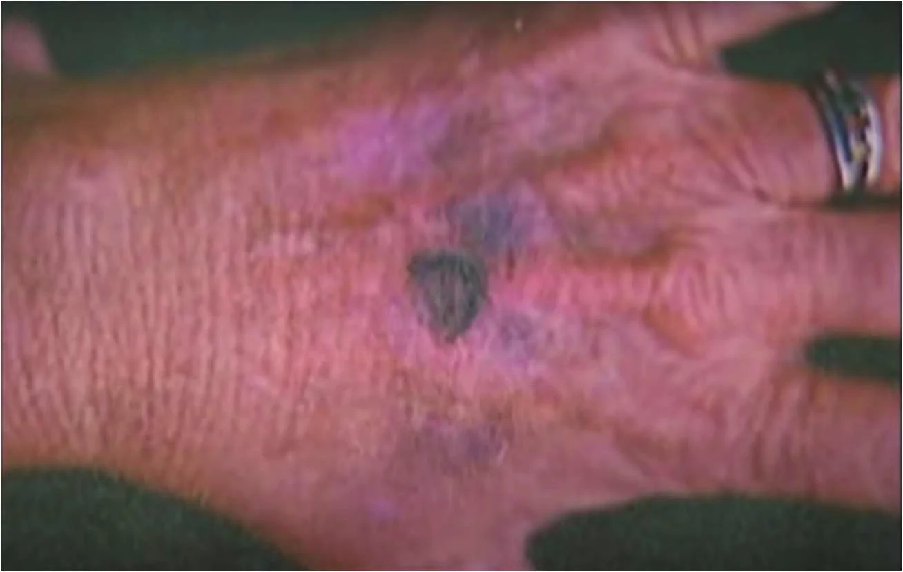
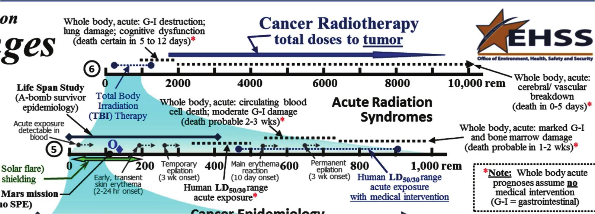
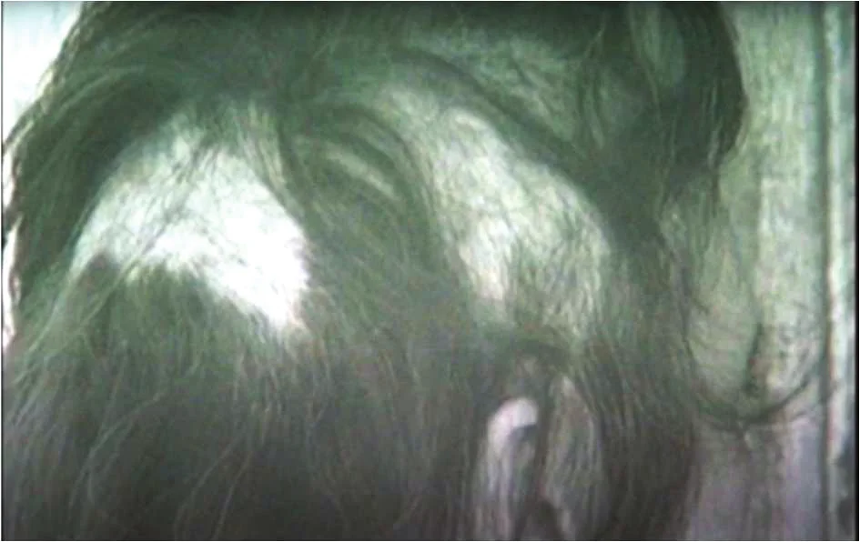
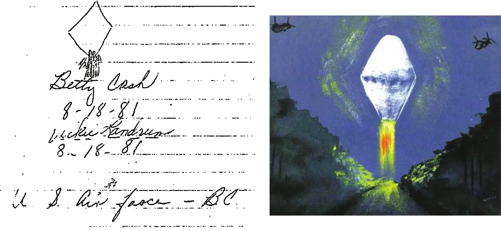

One night in , Betty Cash (then age 51), her friend Vickie Landrum (57), and Vickie’s grandson Colby (7), allegedly witnessed, at close range, a massive, hovering, diamond-shaped, porthole-encircled, fire-spewing object, which was soon to be escorted away by more than 20 military helicopters. This case’s notoriety revolves primarily around Betty’s saga, as she was more exposed to the object than the others and thereafter manifested the most significant illnesses, some of which have been attributed to “radiation sickness” from her UFO close encounter. However, the nature of the principals’ medical signs and symptoms (and the absence of another) provide reason to seriously doubt, if not discount, the role of ionizing radiation. Thus, the reliability of the testimony not merely of the eyewitnesses, but of others who have contributed to Cash-Landrum’s standing as the classic “UFO radiation” case, merits critical scrutiny.
Some forty years ago, aerospace journalist, UFO skeptic,
and friend, Philip J. Klass, requested my assistance in investigating the
then-one-year-old Cash-Landrum “UFO
radiation” case. I was in my second year of medical practice as a general internist, with limited knowledge
regarding radiation-induced illness. My efforts included textbook research and correspondence with, among others,
the primary radiology consultant to the Mutual UFO Network (MUFON), the principal agency chronicling this case. Three years ago, I scanned
much of my file’s content and created a C-L section on my website at gpposner.com/Cash-Landrum.html.All
gpposner.com URLs are case sensitive, as my website is hosted on a Linux server. My contribution to this
book is at the behest of its first-listed editor, whose invitation noted that C-L is such an important case that
it probably even influenced the inclusion of the study of UFO-related physiological effects in the recently
approved Unidentified Aerial Phenomena (UAP) law in the U.S. National Defense Act.
On , Betty Cash, Vickie Landrum, and Colby were interviewed jointly by three U.S. Air Force representatives at Bergstrom Air Force Base in Austin (Texas). The following narrative is derived from a transcript of that session .
Betty and Vickie believed the object to be not an alien spacecraft but an experimental U.S. governmental device. At
the suggestion of ufologist Allan Hendry, Betty
wrote to her two Texas U.S. Senators and received a response from Sen. Lloyd Bentsen directing her to Bergstrom
AFB for assistance. Per her account, at about 21:15 on the night of , with Vickie and Colby as passengers in her vehicle, a strange light was
observed in the sky. As Betty turned the car onto a narrow country road between the Texas towns of New Caney (Texas) and Huffman (Texas) (roughly 30 or 40 km
northeast of Houston (Texas)), the object, which now lit up the entire sky,
suddenly descended almost level with the treetops.
They could not proceed further because fire was
shooting out the bottom of it.
Inside the car, the heat was so intense
that Betty exited the vehicle.
From her vantage point in front of her car, she estimated the size of the craft to be as large, if not larger,
than a water tower.
She watched it for several minutes before retreating back into the vehicle, but the door
handle was so hot I couldn’t stand it with my bare hand, so I got the pocket of my leather jacket to open the car
door.
Once the object lifted off, Betty said it was [still] so hot … we were all burning up.
And within moments
there were helicopters completely around the object … the [type with] two rotors. … I counted twenty three. …
They had
The copters and UFO eventually drifted away together, with
the object emitting a United States Air Force
[markings].shrill beeping sound. … It was … deafening.
Betty estimated the duration of the event
to have been about 15 to 16, 17 minutes.
When asked to draw … a picture … if it had a discernible shape,
and just sign it and date it for me,
Betty sketched what she described as a diamond.
Vickie added some
streaks from the bottom point where she said the fire was coming right down,
and further characterized the
object as kinda like a flat … aluminum, I guess, [and] the inside of it looked dark.
Betty insisted that she had been feeling fine prior to the incident, but within 30 minutes of the traumatic
experience she began developing blisters all over my head, my face, my back, my neck. I was burning … from the
inside out.
She reported prompt swelling of her lips and ears, areas of hair loss and, at the time of this
interview, nearly eight months post-incident, continuing issues with upset stomach, diarrhea, fatigue, and severe
headaches, among other symptoms.
Vickie recounted being outside of the car for just a few minutes,
most of the time apparently only
partially, with one arm holding [Colby] in, and had my [other] arm up on the car,
resulting in it getting
burned.
She added that blisters
on her arms continue to come and go. On the back of her left hand, one
questioner pointed out a bruise about the size of a quarter [and] kind of a deep purple,
about which Vickie
explained, Saturday we were out in the sun for quite a while, and the sun does it to me.
She said her hair
started falling out about a month after the incident
but had since regrown, though with a different texture.
She said she initially was sick [with] the diarrhea and everything,
but most of her ongoing symptoms
seemingly involved her eyes, which she said had started forming … a film, like cataracts, except that my eyes was
burned so bad that they teared for about three months.
She added that they still feel just like they’ve got
sand in them,
especially when she is out in the sun, and my eye doctor said that there’s a possibility that
within a year or year and a half that he’ll have to operate.
Colby concurred with the timeframe of about … 15 to 20 minutes.
He said the object was kinda
yellowish-red
but was not asked and did not comment about its shape or having felt burning heat. Vickie
described him as screaming and crying,
yet when asked [when] you saw it … what did you feel like?
he
replied, I just … [sat] there wondering what it was
and didn’t feel nothing until I got up the next
morning
with stomach pain and runny
stool.
Through the years, numerous books, magazine articles and television programs have perpetuated the story of the Cash-Landrum “UFO radiation” incident. The
, “Close Encounters” episode of The UnexplainedThis series, which ran from , should not be confused with
any newer one(s) with a similar name. may just be, based upon my own experience on another of this series’
episodes, one of the more respectable efforts. On this program The Unexplained, Episode
titled “Close Encounters.” Towers Productions, A&E Network, . Video of a
History Channel rerun can be viewed at: https://tinyurl.com/CL-Unexplained, Betty Cash adds some flourishes to her Bergstrom AFB rendition. For example, when attempting
to reenter the car, I just grabbed the door handle, and when I did it just pulled all the meat off my hand
(at 21:29 of the video). And that night, I went on to bed and I was so sick all night, upchucking. The next
morning I woke up and there was big globs of hair on my pillow
(24:05). Dr. Bryan McClelland, a family
practitioner who began treating Betty after her subsequent move to Alabama months after the incident (to be nearer
her mother), offers, The illness that she suffered three weeks after her exposure was an absolute classic
radiation injury in which she lost skin, she lost hair on the exposed side. She then had diarrhea, vomiting, and
all the illnesses you get [from ionizing radiation], and it was exactly on time
(25:01).
On the same show, Vickie Landrum explains that after the craft and helicopters flew [away] slowly toward Houston
(at
22:08), about 13 km into the resumption of their drive home there was [another?] whole bunch of [the big kind of]
helicopters that were flying in with their searchlights on. They flew over us
(23:12). A photograph of what
the narrator misidentifies as the badly burned [hand of] Betty Cash
(23:26) shows an area
resembling a dark purplish triangle on the back of Vickie’s left hand (a newspaper photo’s caption at 31:25
correctly names Vickie).

In , HBO’s America Undercover
documentary series devoted a portion of its hour-long episode “UFOs: What’s Going On?” to the Cash-Landrum case
America Undercover, Episode titled “UFOs: What’s Going On?” Robert Guenette
Productions, HBO Network, . Video can be viewed at: https://tinyurl.com/CL-Undercover. Per Betty (at 40:23),
After they found out really what had happened, then they started … treating us as radioactive burns. And since
[then], I have had cancer.
The narrator immediately clarifies that Betty’s hospital records do not
explicitly state that she was treated for radioactive burns
but that she exhibited symptoms
similar to someone who might have been exposed to a radioactive element.
Cash-Landrum’s notoriety as a “radiation” case rests primarily upon several reported medical effects allegedly caused by the witnesses’ exposure to the UFO: hair loss, acute skin burns with non-healing sore(s), and gastrointestinal complaints (particularly nausea and diarrhea). Within weeks of receiving Phil Klass’ request for assistance, I had compiled my preliminary findings regarding both the superficial and internal effects of excessive ionizing radiation. Though no two people or exposures are identical and expert opinions can somewhat differ, my sources indicated that temporary epilation (hair loss) requires, for a single exposure, about 300-400 rad of ionizing radiation. It takes 2-3 weeks for onset and, following a resting stage, hair begins to regrow in 1-3 months, gray or white in color but typically with its original texture Fitzpatrick, T.B. (Editor): Dermatology in General Medicine. New York: McGraw Hill, , p. 1038 Prasad, Kedar N.: Human Radiation Biology. Hagerstown, Maryland: Harper & Row (Medical Department), , p. 241. Regarding the skin, acute onset of erythema (redness) requires about 450 rad and should disappear within about three days; it would take exposure of greater than 1,000 rad to cause blistering and non-healing of sores Fitzpatrick, T.B. (Editor): Dermatology in General Medicine. New York: McGraw Hill, , pp. 1037-1038. As for GI effects, while nausea and vomiting may be seen at far lower doses, diarrhea lasting more than a few days would require exposure of 1,000 rad Hall, Eric J.: Radiobiology for the Radiologist. Hagerstown, Maryland: Harper & Row (Medical Department), , p. 202.
In preparation of this chapter, I reviewed some additional resources to augment my originals from four decades
ago. A U.S. Department of Energy
publication contains a graphic titled “Ionizing Radiation Dose Ranges (Rem)” U.S. Department
of Energy Office of Environment, Health, Safety and Security: Information
Brief. , p. 5. Its timeline #5 confirms Temporary
epilation
to typically have a 3 wk onset
following a dosage of about 260 to 300 rem. Early (2-24-hour
onset) transient skin erythema can occur from as little as 190 rem, while Main erythema reactions
require
about 530 rem, roughly the same minimal requirement for circulating blood cell death [and] moderate G-I
damage,
with death probable 2-3 wks.
Without medical intervention, the LD50/30 (dose likely
to be fatal to 50% of victims within 30 days) is roughly 340-500 rem.The differing units of
measurement (“rad” vs. “rem”) seen throughout this chapter are explained thusly by the U.S. Nuclear Regulatory Commission (see https://tinyurl.com/CL-Nuclear): For practical purposes … 1 rad
(absorbed dose) = 1 rem or 1000 mrem (dose equivalent).

On the U.S. Centers for Disease Control and Prevention (CDC) web page devoted to “Acute Radiation Syndrome,”
Table 1 implies that exposure in the 50-rad range should manifest in mild blood-related findings, and that a dose in
the 600-rad range is required for any notable GI effects. Diarrhea continuing for more than a few days—if resulting
from an acute exposure—would be severe and indicative of a full-blown GI syndrome requiring 1,000 or more rad, with
death within 2 weeks
U.S. Centers for Disease Control and Prevention: Acute Radiation Syndrome: A Fact Sheet for Clinicians. Web
page last updated . The U.S. Atomic Energy Commission concurs that this level of whole-body irradiation leaves
the prospects of recovery … so poor that therapy may be restricted largely to palliative measures,
followed
almost invariably by death usually within … 2 weeks
Glasstone, Samuel (Editor): The Effects of Nuclear Weapons (Revised Edition). U.S.
Atomic Energy Commission, , pp. 590, 595.
The principal investigation of this case was conducted by the Mutual UFO Network.
The issue of its MUFON UFO Journal contains an article by Paul
Stowe, MUFON’s Research Specialist in Nuclear Technology Stowe, Paul: Technical Review of Radiation Evidence in Cash-Landrum Case,
MUFON UFO Journal, , pp. 8-9. Stowe asserts that the
observers exhibited radiation sickness of varying severity as well as local skin burn.
He notes that the
photoelectric effect of non-ionizing radiation, such as ultraviolet light, could account for the observed
burn as well as the sensation of heat.
But to account for the [other/deeper] injuries … it is apparent that
a delivered exposure of between 200-300 rem occurred. … [I]t is further assumed [to have been] gamma/X-ray
emission.
His article includes a table based on data gathered by the [U.S.] Department of Defense
listing the observable effects of various ranges of exposure to such radiation. In it, blood abnormalities are noted
to manifest at about 50 rem. The 200-300 rem column reads, Radiation sickness with accompanying first instances
of death occurring within 30 days.
Further down, 300-450 rem represents the range considered to be
LD50/30, and 600-900 rem is the LD100/30 range (100% lethal within 30 days’ time).
Following Stowe’s article, Peter Rank, M.D., a practicing radiologist in
Madison (Wisconsin), and MUFON consultant, writes, I would agree totally with Mr.
Stowe’s analysis,
yet he parts with Stowe regarding both the assumption of deep/total-body exposure (This is
by no means clear
) and the estimated 200-300 rem (I do not believe that a general dosage level can be
assigned
). Rank does concur that both women had symptoms of radiation sickness,
though he notes that
there were no well documented changes in the blood
Rank, Peter: Comments on Stowe Analysis, MUFON UFO Journal, , p. 9.
MUFON co-founder John Schuessler has researched and written
extensively about the C-L case. His article in the MUFON Symposium
Proceedings Schuessler, John F.: Radiation Sickness Caused by UFOs, MUFON Symposium
Proceedings, , pp. 50-64 states that Betty Cash was directly exposed
to the UFO for 5 to 10 minutes
and Vickie Landrum 3 to 5.
By the time Betty arrived home shortly before 22:00, she
already had red blotches
on her face, and over the next four days her health degraded … eyes swelled
closed, the red blotches became blisters of clear fluid, and she was weak with diarrhea and nausea.
Vickie took
Betty to the hospital, where she was admitted as a burn patient,
and over the next several days [she] lost
patches of skin on her face and about fifty percent of her hair fell out.
The caption of a photo of Betty,
depicting two areas of denuded scalp, reads, Betty Cash, back of head showing approximately 50% loss of hair.
Another of the article’s accompanying images was the same hand photo shown earlier, its caption reading, Vickie
Landrum. A sore on the back of her left hand which has not healed.

In , Schuessler published The Cash-Landrum UFO Incident, a book which,
though largely anecdotal, contains passages that faithfully portray Betty’s hospital records Schuessler, John F.: The Cash-Landrum UFO Incident. La Porte, Texas: Geo Graphics Printing
Co., , pp. 88-112, 119-126, 225-230. https://gpposner.com/CL-Schuessler_book-1.pdf, … -2.pdf, … -3.pdf, and … -4.pdf. According to his presentation (which in
a couple of spots leaves me a bit hazy as to whether a date-unspecified event took place during her first
hospitalization or her second), Betty was initially admitted as a burn patient to Parkway Hospital in Houston on
, four days after the UFO incident, with initial complaints of
swelling of the eyes, scalp, and face, along with a terrible headache,
and was discharged on
(p. 88). The consulting dermatologist, Dr. Solomon Brickman, noted areas of swelling and crusting of the scalp, face,
and eyelids, which he diagnosed as cellulitis and treated with antibiotics and steroids (pp. 90-93). He made no
mention of alopecia, nor did admitting physician Dr. V.B. Shenoy who, per Schuessler, specifically noted that
Betty had little, if any, hair loss
upon admission (p. 88). An EEG
and CAT scan of the head were negative (p. 90), as were sinus x-rays,
and neurologist Dr. K. Kumar concluded that her head pain was most probably due to severe tension headache
(p. 104).
Betty was readmitted to Parkway on for similar complaints as well as diarrhea and alopecia,
and remained hospitalized until . Detailed ophthalmologic findings by Dr. Joseph Darsey on
indicated no significant abnormalities, though some small areas of
residual red, dry, and scaly skin of the forehead and eyelids were seen. Her neurological exam on
by Dr. Kumar was again unremarkable. Only upon this admission, nearly a month post-incident, were areas of alopecia
noted, which Dr. Kumar described as two large areas of complete hair loss on either side of the head in the
parietotemporal region.
Dr. Brickman referred to them, per Schuessler, as round spots within which were areas
of black hair regrowth (not the more typical post-irradiation white or gray), and his clinical impression was
alopecia areata
(p. 93), an autoimmune condition sometimes triggered by emotional stress but unrelated to
radiation exposure. This diagnosis was supported by scalp biopsy (p. 94), though Dr. Rank takes issue with the
pathologist’s interpretation of it (pp. 109-111).
Betty was hospitalized again, primarily for skin issues, from at Lloyd Nolan
Hospital in Alabama. In addition to multiple other lesions common to almost anyone her age, Dr. Whittaker (no first
name given, and also spelled “Wittaker” later in the book) noted areas of erythema, especially on the anterior and
posterior aspects of the lower trunk and upper thighs, including the buttocks. He described many of them as
almost like a [round] ringworm-type lesion,
and others as more irregular in shape (pp. 96-97). No definitive
diagnosis was mentioned regarding the skin, but he did comment that her chronic bowel problems
still
persisted. She was hospitalized twice more between for chronic bronchitis and
chronic obstructive pulmonary disease.
In Schuessler’s words, The effects of the radiation exposure were becoming more pronounced,
so Betty was
readmitted to Lloyd Nolan from , her primary complaint being pain in her chest and
left arm (p. 100). Her exam revealed a normal BP of 120/70, a normal
chest x-ray, unchanged EKG, no edema
of her legs, and no cardiac
rubs
often heard with pericarditis. (In a later, anecdotal chapter [p. 125], Schuessler says she was admitted
on , had swollen legs … and low blood pressure,
and that her doctor
said she had pericarditis … secondary to radiation exposure.
) After 2-3 days in CCU,
a heart attack was ruled out. The consulting dermatologist noted
several skin lesions of concern, given the patient’s oral history of radiation exposure,
and, per
Schuessler, the clinical impression was radiation dermatitis. She had biops[ies] of skin and [the] report was
pending at the time of discharge.
When it became available (pp. 100-101), two of the specimens turned out to
be seborrheic keratoses (waxy, superficial growths) and the third hyperkeratotic epithelial hyperplasia
(a
descriptive phrase, essentially translating to “thickened skin” like a callus). Both conditions are benign and
extremely commonplace, and neither is caused by radiation, ionizing or not.
She returned to the hospital in (p. 101) for more skin lesions (same
results as before
) and continuing chest and arm pains (poor exercise tolerance
). On ,
because her problems were continuing to mount,
Betty underwent a bone marrow aspiration and biopsy, along with
a standard CBC/blood count (pp. 101-102). The white cells and platelets in
her blood were normal in number and appearance. Her red cells were slightly small (common, and typical of iron
deficiency). The marrow studies confirmed a marked decrease
of stored iron, but were otherwise normal and
negative for any evidence of marrow damage due to ionizing radiation. Per Schuessler, Betty continued to be
hospitalized several times each year due to a combination of the aforementioned problems.
Skin blistering and non-healing of sores for at least 1½ years, if caused by ionizing radiation, should require an exposure sufficient to kill within a couple weeks—unless it is directed to only a small area (as in targeted radiation therapy) or, rather than deeply penetrating, is only of a superficial, skin-deep nature. If the UFO’s emitted radiation was superficial, how could it account for the deeper “radiation sickness” complaints of nausea, vomiting, diarrhea, and the rest? If penetrating, how could Betty Cash have survived for 18 more years (to age 69) when enough radiation to cause, for example, diarrhea for more than a few days should kill in just a few more? (Vickie Landrum lived another 27 years to age 83, and Colby survives to this day.)
Dr. Rank’s aforementioned assertion that both women had symptoms of radiation sickness,
while also
recognizing that there were no well documented changes in the blood,
creates a quandary, since the absence
of such blood abnormalities indicates internal exposure of less than 50 rem, insufficient to cause the various
symptoms of “radiation sickness.” This is one reason why, in his generous
correspondence with me Personal correspondence with Dr. Peter Rank, . https://gpposner.com/CL-Posner-Rank-1.pdf,
… -2.pdf, … -3.pdf, and … -4.pdf, Rank suggested I read The Medical Basis
for Radiation Accident Preparedness, which he indicated should answer all of your questions.
My
hospital library obtained a copy for me, and though the book actually answered none of them, I did find interesting
a discussion of a man in Japan who had suffered only a small dose of penetrating whole-body radiation despite
several thousand rem locally to one hip. (I can’t recall, but I think a radioactive particle may have been trapped
in a pants pocket.) But how would this sort of story relate to Betty, whose lack of blood abnormalities indicates
deep exposure of less than 50 rem, yet whose “radiation sickness” would have required hundreds more?
Philip J. Klass, whose prior investigations had revealed some of the most “classic”
UFO cases to have been apparent hoaxes, wondered
whether this incident might have a similar explanation. In a letter to
Richard Niemtzow, M.D., a radiation oncologist who also (with Dr. Rank) consulted to MUFON on this case, Klass explained that as a senior editor with Aviation Week
& Space Technology magazine … [which is sometimes] referred to as
Letter from Philip J. Klass to Dr. Richard C. Niemtzow, .
https://gpposner.com/CL-Klass-Niem-1982.pdfAviation Leak
because of our
publication of [sensitive] material … I can assure you that during my nearly 30 years … we have never received a
leak
indicating that the U.S. Government knows anything more about UFOs than it has made public. Based on
[our] excellent sources, I can assure you that IF the principals … were indeed exposed to radiation, that it did
not come from any secret weapon
… [but rather] would represent powerful evidence to support UFOs as
extraterrestrial vehicles. But my gut instincts suggest a more prosaic explanation.
Later that year, Klass inquired to John Schuessler about the
principals’ prior health and was told, Several years [pre-incident], Mrs. Cash had some severe health problems,
but had recovered.
Letters from Philip J. Klass to John F. Schuessler, , p. 2. https://gpposner.com/CL-Klass-Schuessler.pdf It
would be many more years before Schuessler would release Betty’s medical records revealing that prior cardiac
surgery, but in (and again three months later, after receiving no reply),
Klass asked Schuessler, Is it not true that Mrs. Cash had taken chemotherapy and/or … radiation treatment for
cancer prior to the date of the alleged UFO incident?
Schuessler’s brief reply, Where did you get this
information? It wasn’t from me,
Letters from Philip J. Klass to John F. Schuessler,
, p. 3. https://gpposner.com/CL-Klass-Schuessler.pdf
denies only his awareness of the information’s source, not necessarily of its accuracy. On The Unexplained,
Dr. McClelland states (at 26:00) that Betty was economically devastated by the illness that she had after she was
radiated
by the UFO and that later she did get breast cancer and had mastectomies. … She was
uninsured.
In Betty’s words, They’ve ruined my health. They’ve ruined my life. So what else is there that
they can do other than kill me? And they probably would love to do that … [but] I’m going to be around to fight
just as long as there’s a fight left in me
(36:29).
As to whom “they” refers, toward the end of the interviews at Bergstrom, Betty asked the Air Force representatives,
Well, who is responsible for us being injured?
Vickie Landrum asserted that
it had to be something the government had up there … and I intend to find it.
She also revealed that I was
hypnotized, I have the tape if
[anyone wants] to hear the tape. … I knew I wasn’t lying, and I did it because I wanted … people to know I wasn’t
lying.
The session was conducted in by Dr. Leo Sprinkle Collins, Curt: The Cash-Landrum UFO Case Document Collection. Internet
posting, , a psychologist known for his work with UFO “contactees.” A second session with Sprinkle was conducted at a TV studio and
aired on an episode of ABC-TV’s That’s Incredible!, a
series which, as described on its Wikipedia page, featured people performing stunts and reenactments of allegedly
paranormal events.
Video of that , TV program has proven elusive, but I had watched a rerun
the following April and recorded the audio of the segment covering the C-L case (I did miss the first 90-or-so
seconds). More probative to me than anything of value revealed by Vickie under this hypnosis (which was virtually
nothing—listen from 6:53 to 11:10 of the audio) That’s Incredible! ABC-TV, . The Cash-Landrum segment (missing the first approx. 90 seconds) can be
heard at https://gpposner.com/CL-audio.mp3 was a
photograph shown of Betty’s skin. As memorialized in my correspondence (16 months post-viewing) with the MUFON
UFO Journal’s “Critic’s Corner” columnist Personal correspondence with Robert Wanderer,
. https://gpposner.com/CL-Wanderer.pdf, I recalled
observing a number of round, sunburn-type lesions on her limbs [which looked like they] could be explained by UV
light exposure.
I added that a sunlamp would do,
but neglected to mention that she would have first
covered her limbs with material containing round cutouts.
And returning to the matter of Betty’s “later” development of breast cancer, Klass’ initial letter to Schuessler
asking specifically about any “prior” cancer treatment was dated . Earlier
that day, during a telephone conversation (almost certainly surreptitiously recorded, as I knew Klass’ habit to be)
with Peter Gersten, a New York attorney and director of Citizens Against UFO Secrecy, Klass’ transcribed notes from that call indicate that
he was told, As far as Betty Cash is concerned, I think several months ago she had her right breast removed
because of cancer and she is now receiving chemotherapy.
When then asked about any prior history of
cancer, Gersten’s cryptically ambiguous response, Well, none [sic] diagnosis, let’s put it that
way,
Notes from Philip J. Klass regarding his telephone conversation with Peter Gersten,
. https://gpposner.com/CL-Klass-Gersten.pdf can
justify inferring that she may have noted something on self-examination prior to her alleged UFO encounter
and only much later was it evaluated and diagnosed as a malignancy.Per Schuessler’s book (p. 28),
in early lumps were found
(via radiography) in her right breast,
followed by a right mastectomy (), chemotherapy, and also a left
mastectomy (). There is no mention of when Betty may have first felt a
lump, though a xeromammogram in early was interpreted as unremarkable (p.
94).
In pursuit of their quest for compensation for their injuries, Betty and Vickie had engaged Gersten America Undercover, Episode titled “UFOs: What’s Going On?” Robert Guenette Productions, HBO
Network, (at 41:10). https://tinyurl.com/CL-Undercover to file a lawsuit against
the U.S. government. As reported in the publication Texas Monthly, The case dragged on in district court
for several years and called upon the testimony of officials from NASA, the Air Force,
and the Army and Navy, before
being dismissed in because no governmental agency owned or operated any
aircraft fitting Cash and Landrum’s description
(emphasis added) Colloff, Pamela:
Close Encounters of the Lone Star Kind, Texas Monthly,
[Editor's note] The date printed in
the book’s reference, December 31, 1969, cannot be the article’s: Texas Monthly was first published in
, and the article reports the
dismissal. It looks like a default (null) date picked up from a web page.. Three years prior to the case’s ultimate dismissal, the Air
Force had informed Gersten that The appeals of your clients’ claims for personal injuries allegedly caused by an
overflight of an unidentified flying object and unidentified helicopters on have been considered and denied.
Letter from Col.
Charles M. Stewart, Department of the U.S. Air Force, to Peter A. Gersten, . https://gpposner.com/CL-USAF-Gersten.pdf The letter
goes on to state that the Air Force had uncovered no evidence of involvement by any military personnel,
equipment or aircraft in this alleged incident
(emphasis added).Schuessler’s book does
contain an anecdotal double-hearsay account (see gpposner.com/CL-Pilot-Hearsay.pdf) of an unnamed alleged
military pilot’s participation in a multi-helicopter exercise remarkably similar to (including a huge,
spark-throwing “diamond” UFO), and possibly at the very time and place of, the C-L principals’ alleged
sighting. Betty and Vickie hired another attorney in to reopen the
case by showing government officials lied about [their] record-keeping
and to negotiate the sale of his
clients’ movie rights,
Horswell, Cindy: Twice burned, not shy: Stung by radiation, ridicule, trio
stick to UFO story, Houston Chronicle, , pp. 1-2
but nothing came of either endeavor.
The summa cum laude status of Cash-Landrum as a “UFO radiation” case rests not upon superficial burns of the sort that can be caused by the sun’s UV rays or other sources of non-ionizing radiation, but upon symptoms—among them longstanding diarrhea—ascribed to “radiation sickness” resulting from penetrating, ionizing gamma/X-ray-type exposure. Yet, such irradiation, had it occurred, should have been lethal in a matter of days.
If this case were to be stripped of its “radiation” component, it would still qualify as a UFO close encounter and demand critical
scrutiny. Should even one seeming whopper of a falsehood by a principal, such as vividly describing big globs of
hair
falling out within a few hours, justify labeling that person’s UFO eyewitness testimony as unreliable? And what, if anything,
can be inferred about the reliability of investigators’ authentications of extraordinary sightings of, and physical
injuries from, UFOs—whether thought to be extraterrestrial or (as in this case) not—absent unambiguously persuasive
documentary evidence?
John Schuessler “wrote the book” on this case and, as
co-founder of a pro-UFO organization, might be expected to interpret doubtful details in their most positive light.
The same might be said of others who offer their expert services as consultants to such enterprises. For example, in
Dr. Niemtzow’s MUFON UFO Journal article titled “Radiation UFO
Injuries,” when referencing the Cash-Landrum case’s particulars as reported very professionally by Mr. …
Schuessler
in an earlier article, Niemtzow opines (with the caveat that I never examined [the principals] or
had access to their medical records
) that it would be feasible to assume that [they] might have been
exposed to some type of … ionizing radiation
Niemtzow, Richard C.: Radiation UFO
Injuries, MUFON UFO Journal, , p. 14.
Ultimately, however, Dr. Niemtzow appears to have decided otherwise. In a
Internet posting, ufologist Brad Sparks, though
believing that Betty Cash had bravely endured tremendous [physical] suffering as a
result of her unfortunate UFO encounter,
delves into technical matters beyond those addressed in this paper to
explain why he believes ionizing radiation or
must be rejected as the cause, instead
suspecting exposure to a radiation sickness
chemical agent.
He notes that Radiation oncologist … Dr. Richard Niemtzow
reviewed my findings and agreed that the symptoms did not match those expected for ionizing radiation
syndrome
Sparks, Brad: Cash-Landrum: NOT
Ionizing Radiation. Internet posting, . (My correspondence
with Dr. Rank obviously had no such effect.)
UFO researcher and writer Curt Collins’ blueblurrylines.com website
is largely devoted to Cash-Landrum and is filled with historical documents and other invaluable information
(including a detailed report Collins, Curt: Cash-Landrum UFO Disinformation: Rick Doty & Bill Moore.
Internet posting, of Betty and Vickie’s exploitation by some
notable “myth”makers). In a posting Collins, Curt: Report on the Cash/Landrum New Caney CEII Case …. Internet
posting, , his link beginning with the words “A Preliminary
Report” leads to a large pdf file, the first page of which is a
handwritten/signed memo by John Schuessler documenting a phone
conversation during which Dr. Niemtzow was already opining that the skin issues, as reported, seemed compatible with
an exposure to a chemical substance rather than radiation.
Pages 3-7 of that file consist of a letter to
Schuessler written three months earlier by Dr. Rank detailing why he, however, felt it safe to conclude, at this
time, that Betty and Vicki[e] sustained radiation damage,
though confined to the skin and the immediate
subcutaneous area
with the exposure not sufficiently [penetrating] to cause sy[s]temic signs and
symptoms
(blood abnormalities, nausea, vomiting, diarrhea, etc.). Rank added, I think it is important to
assure Betty that on the basis of the medical information you have provided me, that there are no signs of
serious injury to date. You may also reassure Vicki[e] that her cataract was probably a pre-existing condition
and not necessarily related to the incident.
Pages 8-18 of the file contain an analysis of the case by Allan Hendry, chief investigator for the J. Allen Hynek Center
for UFO Studies and author of The UFO Handbook: A Guide to Investigating, Evaluating and Reporting UFO
Sightings, a book widely acclaimed by leading UFO proponents and skeptics alike for its thoroughness and
objectivity. Collins describes Hendry’s 11-page analysis as one of the most valuable pieces of evidence in the
case,
as it was based largely upon extremely rare early interview[s] with the witnesses before the case
became subject to pollution by manipulation and rumors.
Several items of particular relevance to witness
reliability:
It killed the motor in the car!(a phenomenon not uncommonly reported with close encounters). Hendry was
surprised at her new portrayal,since Betty had been telling others, including John Schuessler, that she had turned the engine off herself. When further pressed by Hendry, she continued to insist that
It just quit on its own. … I was beginning to wonder,(pp. 9-10 of the pdf file). Hendry thought this to be likely just aWhat if we can’t get out of here?
glitch in this recent retelling,though
Schuessler acknowledges [also] being disturbed about this discrepancy,and it would be repeated by Betty during the Bergstrom AFB interview later that year:
I had not killed the motor on the car, I had put it [in] park. The radio was playing on low, but the car completely went dead. I mean, it was like somebody had turned a switch off.
because she didn’t have the money.He found it
puzzling,however, that
she continued to use [this] excuseeven after agreeing that
her health insurance would cover the costs(pp. 13-14).
The tabloid coverage … mentioned one seemingly independent witness[along with her son and his wife] but they
apparently don’t want to talk about it.And
a news broadcast arranged by MUFON … has netted at least one other witness(p. 14).
We had a UFO sighting … [not a few months ago when the C-L incident occurred but] about two years ago. … They had a helicopter out there. … Mr. Culverson (with the Army Guard) was involved in that(pp. 15-16). John Schuessler, in the MUFON UFO Journal, discusses a public twin-rotor helicopter demonstration event held not far from the Landrums’ home on (four months after C-L), which Vickie and Colby attended Schuessler, John F.: Cash-Landrum Case Investigation of Helicopter Activity, MUFON UFO Journal, , p. 5. The pilot was identified by Schuessler as Willy Culberson (note the similarity to “Culverson,” though no first name was provided by Hendry), and when approached by Vickie and asked if he had been involved in any previous nearby flights,
He referred to the December UFO event and said he and others had been called out because of the UFO and were there. When Vickie said she was one of the people hurt in that incident, Culberson beat a hasty retreat. Later, he denied via a telephone call [from Schuessler] having been involved.Per Collins, who devotes another page of his website to this mix-up of UFO incidents,
Based on the evidence, it seems that the pilot mentioned [his] UFO case. Vickie, in her excitement, made an overzealous mistaken connection [to her case two years later]. Emotion and the inattention of the investigator [i.e., Schuessler, in his article, by not recognizing the name similarity in Hendry’s report] carried the story from there. The pilot’s [truthful] denial was the foundation of the charges of [a U.S. government] cover-up(emphasis added) Collins, Curt: Exonerating the Helicopter Pilot. Internet posting, .
to the very placewhere they all were able to observe
the roadway that was burned and the trees that were burnedby the UFO’s flames (see The Unexplained, beginning at 29:30). Hendry describes a similar expedition (the same one?) with Vickie and Colby, during which Schuessler associate Alan Holt had paced off the estimated distance between Betty’s parked car and the UFO (about 40 m.) and measured the treetop level to ascertain how high the object had been hovering. Though making no mention either way of burned trees, Hendry’s report does note that
later examination showed no [burn] marks on the pavement(p. 10).
And in a search for evidence of any residual ambient radiation left behind by the UFO, on , two representatives from the Texas Department of Health surveyed the stretch
of road encompassing the site of the alleged incident. Despite making three passes while following the route
[Betty] took
and also gathering three soil samples along the way, No significant deviations from background
radiation were noted
Texas Department of Health interoffice report by
Russ Meyer, , pp. 17-18.
Aside from whether or not they were truly irradiated by a UFO, the eyewitnesses’ testimony regarding the most basic aspect of their sighting—what the alleged object actually looked like—appears utterly unreliable. I refer the reader to Curt Collins’ comprehensive analysis, originally published in the issue of UFO Today magazine and more recently reproduced (with additional illustrations) on his website Collins, Curt: The Cash-Landrum UFO: The True Picture. Internet posting, . When queried in about the portholes and/or lights encircling the object, which are depicted in perhaps all of its subsequent artistic renderings—including the one by Schuessler’s wife Kathy on the cover of his book—Betty Cash denied having seen or reported any such detail. But of far more significance is the hallmark “diamond” shape—a most uncommon contour that almost certainly defines this celebrated UFO in the mind of anyone familiar with the Cash-Landrum case.

During their interview at Bergstrom Air Force Base, the signed drawing by
Betty and Vickie Landrum affirmed their agreement regarding the shape of the craft they
had witnessed. However, as early as , in a transcribed audio recording,
Betty stated, We could not get up close enough to detect what the figure was. Or I couldn’t at least, the lights
were too bright.
Several days later, she added in a handwritten narrative that Vickie said the light was
[also] too bright for her to see very much of the figure.
And as revealed by Vickie in her own
recorded account, Colby swore it looked like a big diamond. I couldn’t tell.
Schuessler,
John F.: The Cash-Landrum UFO Incident, , pp. 39-40, 42, 253. https://gpposner.com/CL-Schuessler_book-5.pdf
So what are we to conclude with regard to the reliability of these UFO witnesses’ testimony? Despite Betty and Vickie’s signed drawing for the U.S. Air Force, was the only principal to have discerned the alleged object’s distinctive shape actually a seven-year-old child who may have had the least opportunity of the three to observe it? Do the official hospital records confirm any of Betty’s numerous health problems as having been caused by exposure to ionizing radiation? Have significant details of her ordeal been embellished and even contradicted in retellings? Have John Schuessler et al. met their burden of providing compelling evidence that the prevailing narrative of this UFO close encounter and its injurious aftermath, which occupies a hallowed spot in the annals of ufology, is historically sound? Or, as I believe, are there myriad reasons for skepticism of virtually every aspect of the legendary Cash-Landrum case?
An e-mail query three years ago from Curt Collins regarding my investigation of this fascinating case prompted me to create my own Cash-Landrum web page. His replies to my e-mails during preparation of this chapter were always not only swift but extremely helpful, and his review of an early draft, which I had foolishly thought might be the final one, was of immense value.